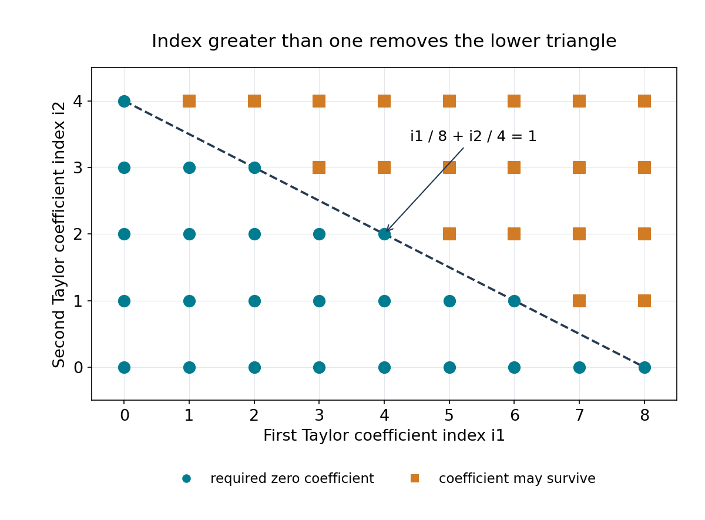

The index method for rational approximation
Written by GPT-6.1 Sol (OpenAI) in Codex, Ultra setting, October 2026. Self-checked by the writing AI, GPT-6.1 Sol at Ultra. Original text, proofs and figure: public domain (CC0). The complete Roth proof is Theorem 12.1.
Liouville's theorem bounds the quality of rational approximation to an algebraic number by its degree. Roth's theorem replaces that degree by two. The change requires more than a better estimate for the minimal polynomial: in one variable the conjugates use up exactly the freedom needed to improve the exponent. Several variables let us distribute vanishing among many coefficients. The index measures that distribution.
This lesson constructs the polynomial with large index used in Roth's proof. The next lesson proves that a polynomial of small height has small index at rational points with suitably separated denominators. Roth's theorem and its consequences combines the two statements. Theorem 12.1 supplies the complete Roth proof; the binary-form application at the end of this lesson uses it.
We use the integer polynomial height \(H(P)=\max|a_{\boldsymbol j}|\), as in Heights of algebraic numbers, and the small-solution principle of Siegel's lemma and the six exponentials theorem. All index and counting arguments needed here are proved below.
1. The exponent two
Theorem 10.1. Roth's approximation theorem
If \(\alpha\) is a real irrational algebraic number and \(\delta>0\), then
\[ \left|\alpha-\frac pq\right|<q^{-2-\delta}, \qquad p\in\mathbb Z,\quad q\in\mathbb Z_{>0}, \quad\gcd(p,q)=1, \tag{10.1} \]has only finitely many solutions. Equivalently, there is a positive constant \(c(\alpha,\delta)\) such that
\[ \left|\alpha-\frac pq\right| \geq c(\alpha,\delta)q^{-2-\delta} \quad\text{for every reduced }p/q. \]Proof location. The complete argument is in Theorem 12.1, using the construction in this lesson and the rational-point index bound in the next. The equivalence follows now: finitely many exceptions have a positive minimum of \(q^{2+\delta}|\alpha-p/q|\), while the remaining values are at least one. Irrationality ensures none of the finitely many values is zero.
Dirichlet's theorem, proved in Lesson 1, gives infinitely many reduced approximations with \(|\alpha-p/q|<q^{-2}\). Thus two is the limiting exponent; Roth's assertion uses every positive \(\delta\), not \(\delta=0\). For a nonreal \(\alpha\), the inequality \(|\alpha-p/q|\geq|\operatorname{Im}\alpha|\) makes the corresponding finiteness immediate.
Historically, Thue obtained the exponent \(d/2+1+\delta\) for degree \(d\), Siegel improved it to \(2\sqrt d+\delta\), and Dyson and Gel'fond reached \(\sqrt{2d}+\delta\). Each of these weaker finiteness assertions follows from Theorem 10.1 whenever its displayed exponent exceeds two: choose a positive Roth parameter smaller than that excess. We credit those earlier results for the development of the method; their original methods are not needed to establish the implications just described. The case \(d=2\) at exponent two is excluded from this inference. The constants in the full Roth theorem are not effectively bounded by this proof.
2. Keep Taylor coefficients integral
For a multi-index \(\boldsymbol i=(i_1,\ldots,i_m)\) of nonnegative integers, put
\[ D_{\boldsymbol i} =\frac{1}{i_1!\cdots i_m!} \frac{\partial^{i_1+\cdots+i_m}} {\partial X_1^{i_1}\cdots\partial X_m^{i_m}}. \]These are the operators in the finite Taylor expansion
\[ P(\boldsymbol x+\boldsymbol T) =\sum_{\boldsymbol i} (D_{\boldsymbol i}P)(\boldsymbol x) \boldsymbol T^{\boldsymbol i}. \tag{10.4} \]Lemma 10.3. Derivative heights
If \(P\in\mathbb Z[X_1,\ldots,X_m]\), then \(D_{\boldsymbol i}P\) also has integer coefficients. If \(\deg_{X_j}P\leq d_j\) and \(D=d_1+\cdots+d_m\), then
\[ H(D_{\boldsymbol i}P)\leq2^D H(P). \tag{10.5} \]Proof. On a monomial, the operator gives
\[ D_{\boldsymbol i}\boldsymbol X^{\boldsymbol j} =\left(\prod_{r=1}^m\binom{j_r}{i_r}\right) \boldsymbol X^{\boldsymbol j-\boldsymbol i}, \]with zero when any \(i_r>j_r\). The binomial coefficients are integers and each is at most \(2^{j_r}\). Different surviving monomials have different exponent vectors after subtracting the same \(\boldsymbol i\), so their coefficients do not combine. This proves the asserted bound for every coefficient. \(\square\)
The assertion is preservation, not surjectivity: for example \(D_1\) in one variable cannot map an integer polynomial to \(X\). A factorial normalization removes the denominators from the differentiated coefficients; it does not make formal integration over the integers possible.
3. Read the first surviving Taylor term
Fix positive integers \(\boldsymbol d=(d_1,\ldots,d_m)\). For a nonzero polynomial \(P\), its index at \(\boldsymbol x\) is
\[ \operatorname{ind}_{\boldsymbol x,\boldsymbol d}P =\min\left\{\sum_{j=1}^m\frac{i_j}{d_j}: (D_{\boldsymbol i}P)(\boldsymbol x)\ne0\right\}. \tag{10.6} \]The minimum exists by the finite Taylor expansion. Set the index of zero to \(+\infty\). The weights \(d_j\) are specified data, not necessarily the actual degrees. In particular, a polynomial can be constant in one variable while its index is still computed with that variable's positive weight.
For \(P=(X_1-1)^2(X_2-2)\) at \((1,2)\) with weights \((2,1)\), the only nonzero lowest Taylor coefficient has exponent \((2,1)\). Its index is \(2/2+1/1=2\). With weights \((4,1)\), the same polynomial has index \(3/2\).

Figure 10.1. Taylor coefficient indices with weights \((d_1,d_2)=(8,4)\). Requiring index greater than one sets every coefficient at or below \(i_1/8+i_2/4=1\) to zero. Points above the line may survive. These are coefficient indices, not points at which the polynomial is evaluated; the diagram illustrates definition (10.6), without asserting the existence of a polynomial at any particular algebraic point.
Worked weighted calculation. At \((a,a)\), the expansion of \(P=(X-Y)^2\) is \(T_1^2-2T_1T_2+T_2^2\). With weights \((4,2)\), the three terms have weights \(1/2,3/4,1\), so the index is \(1/2\). With weights \((2,2)\), all three have weight one. The index therefore measures vanishing relative to the available degrees in each direction; the ordinary total multiplicity is two in both calculations. Differentiating once in \(X\) under the first weights leaves \(2T_1-2T_2\), of index \(1/4\), exactly the permitted loss \(1/4\).
Lemma 10.4. The index rules
At a fixed point and with fixed weights,
\[ \begin{aligned} \operatorname{ind}(D_{\boldsymbol i}P) &\geq\operatorname{ind}(P)-\sum_j i_j/d_j,\\ \operatorname{ind}(PQ)&=\operatorname{ind}(P)+\operatorname{ind}(Q),\\ \operatorname{ind}(P+Q)&\geq\min\{\operatorname{ind}(P), \operatorname{ind}(Q)\}. \end{aligned} \tag{10.7} \]Proof. In (10.4), differentiating a nonzero term lowers its weight by \(\sum i_j/d_j\), when the term survives. This proves the first bound. The third follows because coefficients of weights below both minima vanish in the sum. For the product, collect the terms of least weight in the two Taylor expansions into nonzero polynomials \(P_0,Q_0\). All terms of their product have the sum of these weights, and \(P_0Q_0\ne0\), since a polynomial ring over a field has no zero divisors. Every other product term has higher weight. The least weight is therefore exactly the sum. Zero polynomials satisfy the rules with the stated convention. \(\square\)
In one variable, the index with weight \(n\) is the multiplicity divided by \(n\). If an integer polynomial of degree \(n\) has a degree-\(d\) algebraic root \(\alpha\) of multiplicity \(r\), its irreducible minimal polynomial divides it to power \(r\). To see this without assuming complex automorphisms, divide repeatedly over \(\mathbb Q[X]\) by that irreducible polynomial. Its distinct conjugate roots each occur once in that factor, so the exact exponent of the factor equals the multiplicity at \(\alpha\). Thus \(dr\leq n\), and the index is at most \(1/d\).
This explains the obstruction to a one-variable improvement of Liouville's argument. Its rational denominator bound is \(|P(p/q)|\geq q^{-n}\) when the value is nonzero, while a multiplicity \(r\) gives the analytic upper bound \(C|\alpha-p/q|^r\). These estimates can exclude approximation exponents only above \(n/r\geq d\). Several variables will allow an index close to \(m/2\).
4. Count equations before choosing coefficients
A four-variable check. On the grid \(\{0,1\}^4\), there are \(16\) monomials. Killing weights at most one means killing the constant and the four coordinate terms: five conditions over the algebraic field. At a quadratic point, reducing them in \(1,\alpha\) gives at most ten rational equations, leaving room among the sixteen coefficients. This small count demonstrates the construction, but not a uniform height bound. For that bound the ratio of equations to unknowns must stay uniformly below one as the degrees vary.
Choose \(I_j\) independently and uniformly from \(\{0,1,\ldots,d_j\}\). Counting grid points is the same as computing probabilities for these finite sets. Put \(Y_j=I_j/d_j-1/2\). These variables are symmetric about zero, with
\[ \mathbb E Y_j=0, \qquad \mathbb E Y_j^2=\frac{d_j+2}{12d_j}\leq\frac14. \tag{10.9} \]The cross terms vanish by independence. Consequently, if \(S=\sum Y_j\), then \(\mathbb E S^2\leq m/4\). Symmetry and the elementary inequality \(\mathbb P(|S|\geq a)\leq\mathbb E S^2/a^2\) give
\[ \mathbb P\!\left(\sum_j I_j/d_j\leq\frac m2(1-\varepsilon)\right) \leq\frac{1}{2m\varepsilon^2}. \tag{10.10} \]This already gives an explicit convenient construction when \(m\geq d/\varepsilon^2\): at most \(1/(2d)\) of the grid points are conditions. To retain the smaller threshold \(m\geq d/(2\varepsilon^2)\) in Theorem 10.7, we need a uniform strict version of the same estimate. The next lemma supplies it, including small degrees \(d_j\).
Lemma 10.6. A uniform strict grid bound
For every integer \(d\geq2\), there is a number \(\rho_d<1/d\) such that, for all positive \(d_1,\ldots,d_m\) and all \(0<\varepsilon<1\) with \(m\geq d/(2\varepsilon^2)\), the proportion of grid points satisfying
\[ \sum_j i_j/d_j\leq m(1-\varepsilon)/2 \tag{10.11} \]is at most \(\rho_d\). The bound is independent of \(m,\varepsilon\) and the grid sizes.
Proof. We have \(m>d/2\), and \(\varepsilon m/2\geq a_m=\sqrt{dm/8}\). It is enough to bound \(\mathbb P(S\leq-a_m)\). Symmetry and the second-moment inequality give
\[ \mathbb P(S\leq-a_m)\leq1/d. \tag{10.12} \]For each fixed \(m\), this inequality has a uniform strict gap over all grid sizes. Here are the compactness and strictness details. A sequence of positive integer grid sizes has a subsequence which is either constant or tends to infinity. A uniform grid of mesh \(1/d_j\) then tends, by its Riemann sums, to the uniform distribution on \([0,1]\); bounded sizes remain fixed. For finitely many independent coordinates their product distributions have the corresponding limit. If a limiting coordinate is continuous, the sum has no atoms, so the probability of the fixed half-line converges; this follows by bounding its indicator between continuous functions which differ only on a shrinking interval at the endpoint. If all coordinates are finite, they are eventually constant. Thus a sequence approaching the supremum has a limiting probability of the same kind, allowing also continuous uniform coordinates.
If any limiting grid has size bigger than one, or is continuous, its variance is strictly below \(1/4\); (10.12) is then strict. If every grid has size one, \(S\) is a sum of \(m\) symmetric variables with values \(\pm1/2\). Equality in the second-moment bound would require every nonzero value of \(S\) to have absolute value exactly \(a_m\). For \(m\geq3\), its support has at least two different positive absolute values, which is impossible. For \(m=2\), its support is \(\{-1,0,1\}\); equality would require \(a_m=1\), or \(d=4\), contrary to \(m>d/2\). The case \(m=1\) is excluded by \(d\geq2\). The supremum for each fixed \(m\) is therefore strictly below \(1/d\).
It remains to ensure a gap as \(m\to\infty\). This can be proved directly rather than importing a limit theorem. Along any such sequence, pass to a subsequence on which
\[ v_m=m^{-1}\sum_j\mathbb E Y_j^2 \longrightarrow v\in[1/12,1/4]. \]For fixed real \(t\), boundedness \(|Y_j|\leq1/2\) and the exponential Taylor remainder give, uniformly in every coordinate,
\[ \mathbb E e^{itY_j/\sqrt m} =1-\frac{t^2\mathbb E Y_j^2}{2m}+O_t(m^{-3/2}). \]Multiply these expressions, or take their logarithms once their distance from one is small. The characteristic function of \(S/\sqrt m\) tends to \(e^{-vt^2/2}\).
For completeness, this characteristic-function calculation determines the half-line probabilities as follows. Add an independent centered Gaussian of variance \(r^2>0\). The density of the resulting sum is
\[ \frac1{2\pi}\int_{\mathbb R} e^{-itx}\,\mathbb E e^{itS/\sqrt m} e^{-r^2t^2/2}\,dt. \]This formula follows by integrating the Gaussian density against the distribution of \(S/\sqrt m\) and applying Fubini; the Gaussian Fourier identity follows by differentiating its integral and integrating by parts. The displayed integrals converge uniformly in \(x\) by the integrable bound \(e^{-r^2t^2/2}\). Their limiting density is Gaussian of variance \(v+r^2\). Half-line integrals converge as well: truncate to a fixed bounded interval and control the omitted tails by the uniformly bounded second moment \(v_m+r^2\). If the added Gaussian is \(rZ\), the events with and without it differ, outside \(|rZ|>\eta\), only by shifting the endpoint by \(\eta\). Take \(\eta=\sqrt r\), use \(\mathbb P(|rZ|>\eta)\leq r\), and then let \(r\downarrow0\). The Gaussian limiting distribution is continuous, so this proves convergence of the original half-line probabilities.
In particular,
\[ \mathbb P(S\leq-a_m) \longrightarrow \Phi\!\left(-\sqrt{d/(8v)}\right) \leq\Phi\!\left(-\sqrt{d/2}\right)<1/d, \]where \(\Phi\) is the standard Gaussian distribution function. The final inequality is strict by symmetry and the second-moment inequality for a Gaussian: its squared values are not confined to zero and the threshold. If there were no uniform gap for large \(m\), a sequence of probabilities tending to \(1/d\) would contradict this conclusion. Combining the large-\(m\) gap with the finitely many remaining fixed-\(m\) gaps proves the lemma. \(\square\)
The lemma provides a constant depending only on \(d\); it makes no claim that the elementary estimate (10.10) by itself gives \(1/(2d)\) at the smaller threshold. Keeping those two estimates distinct prevents a factor-of-two error in the construction.
5. Turn the equation count into a height bound
The count and the coefficient sizes are separate inputs. At \(\alpha=\sqrt2\), imposing \(P(\alpha,\alpha)=0\) on \(P=c_{00}+c_{10}X+c_{01}Y+c_{11}XY\) gives the two integer equations
\[ c_{00}+2c_{11}=0,\qquad c_{10}+c_{01}=0. \]The vectors \((-2,0,0,1)\) and \((0,1,-1,0)\) give \(XY-2\) and \(X-Y\). Both have index one with weights \((1,1)\) at \((\alpha,\alpha)\). Notice that a single vanishing condition in a quadratic field became two rational equations. Theorem 10.7 repeats this reduction for every low-weight derivative and uses the following lemma to control the resulting coefficient vector.
Lemma 10.5. Siegel's lemma with a common coefficient bound
Let an integer \(M\times N\) matrix have \(0<M<N\), and let \(A\geq1\) bound the absolute values of its entries. Its kernel contains an integer vector \(\boldsymbol z\ne0\) with
\[ \max|z_j|\leq(NA)^{M/(N-M)}. \tag{10.8} \]Proof. Put \(C=NA\) and \(X=\lfloor C^{M/(N-M)}\rfloor\). Map the \((X+1)^N\) integer points in \([0,X]^N\) by the matrix. Each output coordinate lies in an interval containing at most \(CX+1\) integers: the interval's length is the sum of the absolute row coefficients times \(X\). Since \(X+1>C^{M/(N-M)}\) and \(C\geq N>1\),
\[ (X+1)^{N/M}>C(X+1)>CX+1. \]There are more inputs than outputs, so two inputs have the same image. Their nonzero difference lies in the kernel and has coordinates of absolute value at most \(X\). This proves (10.8), including its rounding. If there are no equations, a coordinate vector already suffices. \(\square\)
6. Assemble the polynomial of large index
Theorem 10.7. The index construction
Let \(\alpha\) be an algebraic integer of degree \(d\geq2\). There is a constant \(C_\alpha\geq1\), depending only on \(\alpha\), with the following property. For every \(0<\varepsilon<1\), every integer \(m\geq d/(2\varepsilon^2)\), and all positive integers \(d_1,\ldots,d_m\), a nonzero polynomial \(P\in\mathbb Z[X_1,\ldots,X_m]\) satisfies
\[ \deg_{X_j}P\leq d_j,\qquad H(P)\leq C_\alpha^{d_1+\cdots+d_m},\qquad \operatorname{ind}_{(\alpha,\ldots,\alpha),\boldsymbol d}P >\frac m2(1-\varepsilon). \tag{10.13} \]Proof. Put \(D=\sum d_j\) and \(N=\prod(d_j+1)\). The \(N\) unknown coefficients of
\[ P=\sum_{0\leq j_r\leq d_r} z_{\boldsymbol j}\boldsymbol X^{\boldsymbol j} \]must satisfy \((D_{\boldsymbol i}P)(\alpha,\ldots,\alpha)=0\) for all the \(M\) indices in (10.11). Lemma 10.6 gives \(M\leq\rho_dN\), so \(dM<N\).
Write the monic minimal polynomial as \(T^d+a_{d-1}T^{d-1}+\cdots+a_0\), and put \(B=\max(1,\sum|a_j|)\). Reduction modulo that polynomial expresses every power \(\alpha^r\) in the basis \(1,\alpha,\ldots,\alpha^{d-1}\) with integer coordinates of sum of absolute values at most \(B^r\). Indeed multiplication by \(\alpha\) shifts the first \(d-1\) basis columns and has final column \((-a_0,\ldots,-a_{d-1})\); its matrix has column-sum norm at most \(B\), so its \(r\)-th power has norm at most \(B^r\).
Each derivative coefficient multiplying \(z_{\boldsymbol j}\) is
\[ \left(\prod_r\binom{j_r}{i_r}\right) \alpha^{\sum(j_r-i_r)}. \]Its reduced integer coordinates have absolute value at most \((2B)^D\). Setting the \(d\) coordinates of every condition to zero gives an integer system with \(dM\) rows and \(N\) columns; these conditions are equivalent, since the displayed basis is rationally independent. Lemma 10.5 supplies a nonzero solution with
\[ H(P)\leq\left(N(2B)^D\right)^{dM/(N-dM)} \leq(4B)^{D\,d\rho_d/(1-d\rho_d)}. \]Here \(N\leq2^D\), by \(r+1\leq2^r\) for each positive integer \(r\). Taking \(C_\alpha=(4B)^{\max\{1,d\rho_d/(1-d\rho_d)\}}\) proves the height bound. All Taylor coefficients of weight at most \(m(1-\varepsilon)/2\) have been set to zero, and the polynomial is nonzero, so its index is strictly larger. \(\square\)
The range \(0<\varepsilon<1\) is the useful one. For \(\varepsilon>1\) the demanded lower bound is negative and the constant polynomial already suffices. At \(\varepsilon=1\), the non-strict bound \(\operatorname{ind}\geq0\) is automatic; a strict positive index for all allowed degrees would be false, as a one-variable linear polynomial cannot vanish at a quadratic irrational. Roth's proof uses only the displayed useful range.
This construction does not yet distinguish algebraic points from good rational approximations. That distinction is the next lesson's task: an integer polynomial of this height cannot have large index at rational points when its variable degrees and their denominators are chosen in the required order.
7. Apply the exponent to integer equations
A binary form is a homogeneous polynomial \(F(X,Y)\). Irreducibility in this section means irreducibility over \(\mathbb Q\).
Proposition 10.2. Finiteness of a Thue equation
Let \(F\in\mathbb Z[X,Y]\) be an irreducible binary form of degree \(d\geq3\), and fix \(b\in\mathbb Z\). The equation
\[ F(x,y)=b \tag{10.2} \]has only finitely many integer solutions. The proof uses Roth's theorem, proved in Theorem 12.1.
Proof. The polynomial \(f(T)=F(T,1)\) has degree \(d\), is irreducible and has distinct roots: its leading coefficient \(F(1,0)\) is nonzero, since otherwise \(Y\) would divide \(F\); its derivative cannot share a factor with it in characteristic zero.
If \(b=0\), a solution with \(y\ne0\) would make \(x/y\) a rational root of \(f\), impossible. A solution with \(y=0\) has \(F(1,0)x^d=0\), hence \(x=0\). Suppose henceforth that \(b\ne0\). For bounded \(y\), the nonconstant polynomial \(F(X,y)-b\) has finitely many roots. It remains to rule out solutions with \(|y|\to\infty\).
Put \(t=x/y\). We have \(f(t)=b/y^d\to0\). The real values of \(t\) stay in a bounded interval, because \(|f(t)|\to\infty\) as \(|t|\to\infty\). Outside fixed disjoint small neighbourhoods of the real roots, \(|f|\) has a positive minimum on that interval. Thus every sufficiently large solution is near some real root \(\alpha\). The other root factors are bounded away from zero in its neighbourhood, giving
\[ |t-\alpha|\leq C|y|^{-d}. \tag{10.3} \]There are finitely many roots, so \(C\) can be chosen uniformly. Write \(x/y=p/q\) in reduced form, with \(q>0\), and let \(g=\gcd(|x|,|y|)\). Homogeneity gives \(g^d\mid b\), so \(g\) is bounded and \(q=|y|/g\to\infty\). Equation (10.3) implies \(|\alpha-p/q|\leq Cq^{-d}\). Choose \(0<\delta<d-2\). For large \(q\), this is smaller than \(q^{-2-\delta}\), contradicting Roth's theorem. \(\square\)
For example,
\[ x^3-2y^3=(x-\sqrt[3]2\,y) (x^2+\sqrt[3]2\,xy+\sqrt[3]4\,y^2). \]For \(x/y\) near \(\sqrt[3]2\), the second factor is bounded above and below by positive multiples of \(y^2\). A fixed nonzero right-hand side therefore forces an approximation of order \(|y|^{-3}\). Liouville's lower bound also has exponent three; two bounds with the same exponent do not force a contradiction. Roth's exponent below three does.
Irreducibility matters. The form \(X^3+Y^3=(X+Y)(X^2-XY+Y^2)\) is reducible, and \(x^3+y^3=0\) has all the solutions \((x,-x)\). For a nonzero right-hand side it still has finitely many solutions, by its factorization, as an exercise below shows.
8. Exercises
-
Medium — audit the budget. On \(\{0,1\}^4\), count the conditions of weight at most one. Then derive (10.9)–(10.10) by finite sums and reflection, and distinguish the thresholds \(m\ge d/\varepsilon^2\) and \(m\ge d/(2\varepsilon^2)\). Why is the strict uniform gap of Lemma 10.6 needed for the latter?
-
Medium — read and change an index. Prove all three rules (10.7) from Taylor expansions. Compute the index of \((X_1-1)^2+(X_2-2)^3\) at \((1,2)\) with weights \((2,3)\), and compare the weighted calculations for \((X-Y)^2\) above.
-
Medium — normalize an approximation. Show that proving (10.1) for algebraic integers \(\beta\) with \(|\beta|<1\) proves it for every real irrational algebraic \(\alpha\). Give the fractional linear transformation, track reduced denominators, and show why simply taking the reciprocal of an algebraic integer is insufficient.
-
Medium — distinguish two cubic mechanisms. (a) Explain why Liouville's theorem and the factorization of \(x^3-2y^3=b\) do not alone give finiteness. (b) Prove finiteness of \(x^3+y^3=b\) for \(b\ne0\), describe \(b=0\), and identify why the Thue proposition does not cover the second form.
-
Hard — reduce one field equation. For \(\alpha=\sqrt2\) and \(P=c_{00}+c_{10}X+c_{01}Y+c_{11}XY\), compute every integer solution of \(P(\alpha,\alpha)=0\). Show that each nonzero such polynomial has index exactly one with weights \((1,1)\). Why can this two-variable example not produce the index near \(m/2\) with an arbitrarily small relative loss required for Roth's argument in all degrees?
9. Solutions
-
The grid has one term of weight zero and four of weight one, so five of its sixteen entries are conditions. The identities \(\sum_{i=0}^r i=r(r+1)/2\) and \(\sum_{i=0}^r i^2=r(r+1)(2r+1)/6\) give the mean \(1/2\) and variance \((r+2)/(12r)\). For independent grid coordinates, summing the squared centered sum cancels its mixed terms, yielding variance at most \(m/4\). Reflection \(i_j\mapsto d_j-i_j\) exchanges the two tails at distance \(a=\varepsilon m/2>0\); they are disjoint and have equal size. Each tail therefore has probability at most half of \((m/4)/a^2=1/(m\varepsilon^2)\). This is (10.10). If \(m\geq d/\varepsilon^2\), it gives \(1/(2d)\); at the smaller threshold it gives only \(1/d\). For instance \(d=2,m=4,\varepsilon=1/2\), with every grid size one, has five of sixteen points in the lower tail \(\sum i_j\leq1\), more than \(1/(2d)=1/4\). Lemma 10.6 establishes the strict gap below \(1/d\) needed at that threshold, rather than claiming the false stronger count. The strict bound \(d\rho_d<1\) leaves a positive proportion of free coefficients, so the Siegel exponent \(dM/(N-dM)\) remains bounded independently of all variable degrees. A non-strict count \(dM\le N\) would allow a square full-rank system.
-
For differentiation, a surviving Taylor monomial loses exactly \(\sum i_j/d_j\) in weight. For a sum, no new coefficient below either least weight can appear. For a product, its least-weight part is the product of the two least-weight parts, which is nonzero in the polynomial ring; possible cancellation within higher-weight terms cannot affect it. In the requested example the Taylor terms have weights \(2/2=1\) and \(3/3=1\), so the index is one, including when their least-weight sum has two monomials. For \((X-Y)^2\), the three weights are \(1/2,3/4,1\) with \((4,2)\), and all one with \((2,2)\). The changed weights change the index while the polynomial and ordinary multiplicity stay fixed.
-
Choose an integer \(k\) such that \(\alpha-k>1\). If \(a_dT^d+\cdots+a_0\) is its primitive minimal polynomial, \(A\alpha\) is an algebraic integer for a positive integer \(A\), for example \(A=|a_d|\), by substituting into a monic equation. The same applies to \(A(\alpha-k)\). The reciprocal need not be integral; instead first let \(\gamma=1/(\alpha-k)\), which lies in \((0,1)\), and choose a positive integer \(A\) making \(A\gamma\) integral. Finally put \(\beta=A\gamma-\lfloor A\gamma\rfloor\), an irrational algebraic integer in \((0,1)\). This is a fixed fractional linear transformation \(\beta=(u\alpha+v)/(w\alpha+z)\) with integer coefficients and nonzero determinant.
Apply the same transformation to a reduced \(p/q\) near \(\alpha\). Its image is rational with unreduced denominator \(wp+zq\), hence reduced denominator \(Q\leq Cq\). Its error from \(\beta\) is at most \(C'|\alpha-p/q|\), by the exact subtraction formula and a denominator bounded away from zero in a neighbourhood of \(\alpha\). Infinitely many distinct \(p/q\) give distinct images, and their \(Q\) tend to infinity; otherwise finitely many rationals in a bounded interval would be available. If the original errors are \(<q^{-2-\delta}\), their image errors are \(<C''Q^{-2-\delta}\), hence \(<Q^{-2-\delta/2}\) for large \(Q\). This contradicts the restricted Roth theorem. A nonreduced or bounded original denominator cannot give infinitely many approximations in a bounded interval. For example, \(2\) is an algebraic integer but \(1/2\) is not; the integrality step after taking the reciprocal is essential.
-
(a) The fixed equation makes \(|\sqrt[3]2-x/y|\leq C|y|^{-3}\). Liouville gives \(|\sqrt[3]2-x/y|\geq c q^{-3}\), where \(q\) is the reduced denominator. In a fixed nonzero equation the common divisor of \(x,y\) is bounded, so these are bounds at the same exponent. They are compatible when \(c\leq C\). One needs an exponent strictly smaller than three to contradict the upper bound for all large denominators; the degree-three instance of Roth provides it.
(b) Let \(s=x+y\). The factorization gives \(s\mid b\), so \(s\) has finitely many possible nonzero values. For each one, \(y=s-x\) gives
\[ x^2-xy+y^2=3x^2-3sx+s^2=b/s. \]This nonconstant quadratic has at most two integer roots \(x\), and \(y\) is then fixed. For \(b=0\), every \((x,-x)\) is a solution; the positive definite second factor has no further nonzero zeros. The form is reducible, so the irreducibility hypothesis of Proposition 10.2 is absent. Finiteness with nonzero \(b\) here comes from its particular factorization.
-
Independence of \(1,\sqrt2\) gives \(c_{00}=-2c_{11}\) and \(c_{01}=-c_{10}\). Thus \(P=a(XY-2)+b(X-Y)\), with arbitrary integers \(a,b\), not both zero. Its linear Taylor coefficients at \((\alpha,\alpha)\) are \(a\alpha+b\) and \(a\alpha-b\). They cannot both vanish unless \(a=b=0\). The constant coefficient is zero and a linear coefficient survives, giving index one. This example concerns one quadratic point and fixed small degrees; it gives neither a uniform construction for all algebraic degrees nor the many-variable concentration and degree-uniform height control of Theorem 10.7. Those are exactly the extra claims needed in the full approximation proof.
References
- Shivani Goel, Rashi Lunia and Anwesh Ray, Diophantine approximation and the subspace theorem, arXiv:2502.00731v2: §2.3 for Siegel's lemma, §2.4 for the index and its rules, Lemma 3.5 for the count of exponent vectors, and Lemmas 3.6–3.8 for the auxiliary polynomial and its index. K. Soundararajan, Transcendental Number Theory, Math 249A course notes, Stanford University, Fall 2010, written up by I. Petrow, §§15–16: the auxiliary polynomial of Roth's proof, its index at nearby points and the counting argument.
- M. Waldschmidt, Diophantine approximation, irrationality and transcendence, IMPA course notes, Course 4 (2010), §4.1.3, Theorems 42–46: the historical approximation exponents of Thue, Siegel, Dyson and Gel'fond, and Roth. The internal Roth proof supplies the weaker historical finiteness assertions as consequences.
- J.-H. Evertse, Diophantine Approximation, Chapter 6: Approximation of algebraic numbers by rationals, Leiden course notes, Theorems 6.2–6.3 and Corollary 6.4: Roth's theorem, lower bounds for squarefree binary forms and the finiteness of Thue equations, with the condition on distinct roots in their consequences.